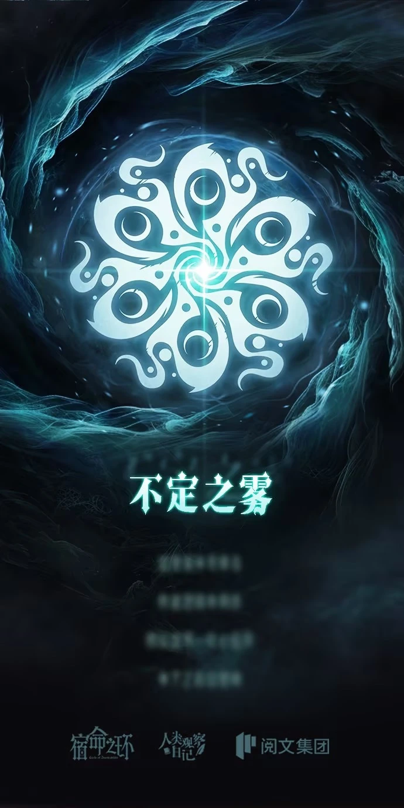

Overview
Other Identities: Son of Chaos, Uncertain Mist
The Uncertain Mist is one of the Outer Deities from the Cosmos that attempted to invade Earth. "He" is the remaining part of the Son of Chaos in the Cosmos after "He" sent "His" main consciousness down to Earth.
"He" is the current owner of the Chaos Mist.
Honorific Name
Bridge of Light and Darkness; Interstice Between Black and White; Ever-Uncertain Mist; The Truth that Oversees All Things (光与暗的桥梁， 黑与白之间隙， 永不确定的迷雾， 监督万物的真理)
Symbols, Authorities & Abilities
See also: Son of Chaos
TRANSLATION NOTE In the original Chinese text, 真理 (zhēnlǐ) and 真实 (zhēnshí) are distinct terms with different nuances, though both can be translated as “Truth” in English, as is done in the English WebNovel translation (School of Truth and the symbolism of Truth respectively). This note will illustrate the different meanings lost in translation.
- Chaos Mist's Truth (真理, zhēnlǐ):
- Universal Truth; It denotes a universal, objective, or philosophical truth that reflects the fundamental principles of reality, often absolute or unchanging.
- Sublunary Eye's Truth (真实, zhēnshí):
- Truth/Reality; It denotes factual existence, genuineness, or something that is not false or illusory, often concrete and verifiable.
"He" possesses full Authority over the Chaos Mist and the corresponding Symbols, which include but are not limited to the following:
- Chaos Mist: Authorities over Deconstruction, Truth, and Chaos.
The Symbols, Authorities, and Abilities "He" possesses and displays at the Above the Sequence level include:
- Chaos: As one of the three direct children of the Original Creator, the Son of Chaos inherently possesses the Chaos quality of the Original Creator.5
- As the Uncertain Mist possesses the Chaos Mist, "He" possesses the Chaos aspect of the Son of Chaos.
- As the Primordial Hunger possesses Primordium and Chaos qualities, "He" prioritized devouring the Sefirot and Great Old Ones related to those qualities the most. Among the Outer Deities, "He" preferred the Uncertain Mist the most,6 because "He" is the Chaos Gastric Juices, while the Uncertain Mist is a part of the Son of Chaos.7
- Gray: "His" Chaos Mist is the gray between white and black, the fog between light and darkness, the bridge between Order and the Shadows of Order of the Son of Chaos.8
- Transaction:
- Without the Uncertain Mist present to coordinate and unify the Outer Deities into an alliance, none dared bet on receiving support if "They" stayed behind to deal with the Lord of Mysteries.2Book 2, chapter 1165
- Without the Uncertain Mist, the Outer Deities would be disunited, each fighting for "Themselves", and would easily be driven back by Earth's Above the Sequences after The Apocalypse.9
- Overseeing: With the strengthened Overseer ability at the Great Old One level, "He" could only be harmed by existences possessing a Sefirah.10
Appearance
It occupies a solid, massive planet in the Cosmos. The planet is shrouded in layers of ever-changing white mist.11 The size and state of the dense white mist was indescribable.3Book 2, chapter 884
History
As one of the Original Creator's direct children, the Son of Chaos was the most affected by the Law of Beyonder Characteristics Convergence when the Original Creator awakened in the Pre-Epoch, resulting in part of "His" Sefirah, Beyonder Characteristics, and Uniquenesses being attracted to Earth. Part of "His" torn Sefirah later self-completed into the Nation of Disorder, while "He" retained influence over "His" lost Pathways on Earth. However, "He" was able to bypass the barrier by killing "Himself" and then resurrecting through the Black Emperor ability.12
In the First Epoch, the Celestial Worthy of Heaven and Earth for Blessings sealed the Genie, the consciousness of the Son of Chaos, in the Magic Wishing Lamp.13 Most of "His" remaining parts were in the depths of the universe as the Outer Deity called the Uncertain Mist.14
As of 1358, the Uncertain Mist, along with the Mother Goddess of Depravity and the Mother Tree of Desire, were the three Outer Deities can bestow godhood through Boons without much difficulty.15
"He" is the Deity worshipped by the School of Truth, a Secret Organization founded after year 1352 of the Fifth Epoch. By 1358, the School of Truth were looking for clues to three things: the Fallen Heaven, Roselle's final mausoleum, and the Magic Wishing Lamp.4Book 2, chapter 713
During Project Vortex in 1359 of the Fifth Epoch, both the Uncertain Mist and the Genie inside the Magic Wishing Lamp were heavily injured by the combined efforts of Adam, Amon, Roselle Gustav and Bernadette Gustav.3 The planet the Uncertain Mist was residing on shattered and "It" was forced to retreat into the depths of the endless, dead, and dark Cosmos. As "It" suffered a heavy blow, "It" would have to sleep for decades. For sixty years, the Uncertain Mist would not be able to come again, ensuring one less danger during The Apocalypse.3
As the Uncertain Mist would not be able to bestow any Boons till then, no more Beyonders of the Chaos Mist Pathway would appear before The Apocalypse.
During The Apocalypse, without the Uncertain Mist to coordinate and unify the Outer Deities into an alliance, none dared to bet on receiving support if "They" stayed behind to face and eliminate the Lord of Mysteries Klein Moretti.16 As a result, once The Fool Grafted the various Sefirot away, the Outer Deities scattered according to "Their" targets.
After The Apocalypse, Klein intended to fulfill his promise to return the Magic Wishing Lamp to the universe, using it to lure out the hiding Uncertain Mist and secretly influence "Him". Without the Uncertain Mist, the Outer Deities would be disunited, and would easily be driven away.17
The Genie and the Uncertain Mist are hostile towards each other.18 Whether the Uncertain Mist or the Genie would emerge victorious after "They" merged is unknown, both scenarios are equally plausible.19
See Also
- Son of Chaos
Translations
| Language | Name |
|---|---|
| English | Uncertain Mist |
| Chinese | 不定之雾 |
| Thai | - |
References
- Author's WeChat post um.
- Book 2, chapter 1165.
- Book 2, chapter 884.
- Book 2, chapter 713.
- Author's WeChat post um, part 9.
- Author's WeChat post ph, part 3.
- Author's WeChat post coi, part 39.
- Book 2, chapter 714.
- Book 2, chapter 1177.
- Author's WeChat post error_abilities, part 24.
- Book 2, chapter 865.
- Author's WeChat post ph, part 8.
- Book 2, chapter 883.
- The Few Sequence Names that are Missing.
- Book 2, chapter 170.
- Book 2, chapter 1165.
- Book 2, chapter 1177.
- Author's WeChat post sun_formulas, part 15.
- Author's WeChat post visionary_formulas, part 15.
Source
Article adapted from the Uncertain Mist article on the Lord of the Mysteries Fandom wiki (CC BY-SA). Chapter numbers follow that article's citation format.
Image gallery
